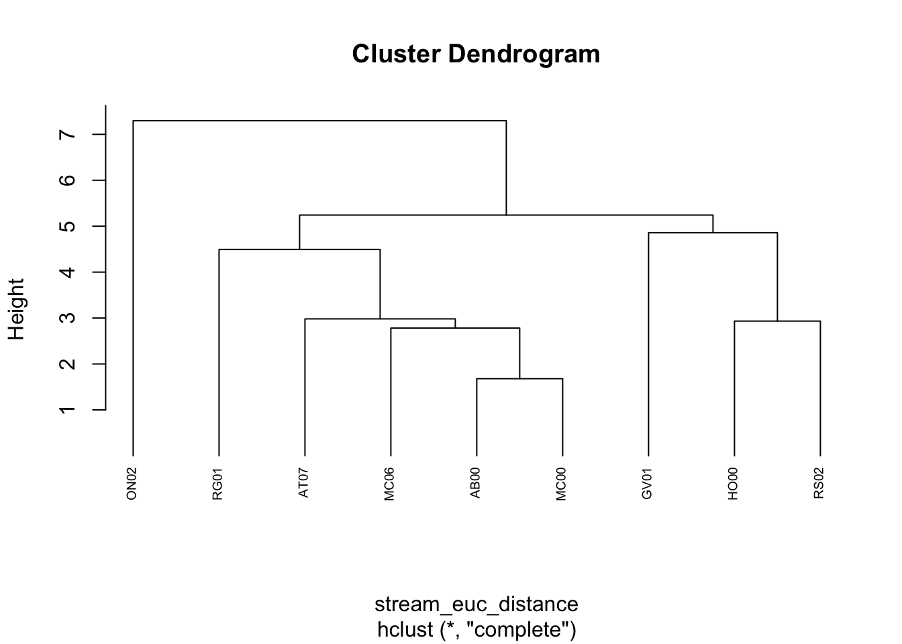
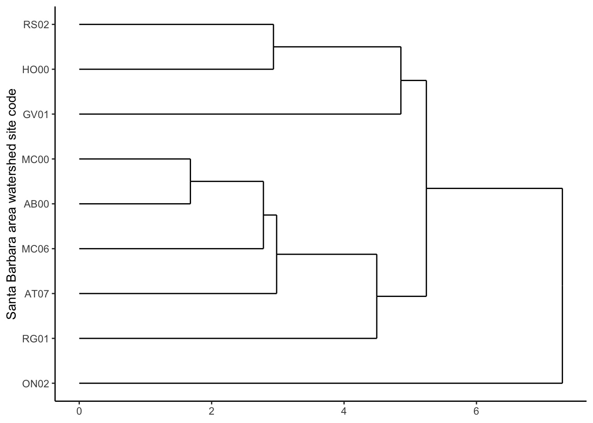

library(tidyverse)
library(here)
library(janitor)
# Packages for cluster analysis:
library(NbClust)
library(cluster)
library(factoextra)
library(dendextend)
library(ggdendro)To access data, html and Rmd files:
- https://github.com/elmeraa/244-assignment4
- you will find the stream chemistry data in the “data” folder
- you will find the Rmd and html files as “a4-task1” in the “src” folder
Load packages
Introduction:
- To perform hierarchical clustering by site, we’ll begin by making a data frame that has a single summary row per site (e.g. based on means from all observations at that site), then we will calculate the euclidean distance before performing complete linkage agglomerative hierarchical clustering.
Read in data
stream_chem <- read_csv(here("posts", "2021-03-07-hierarchical-clustering","sbc_lter_registered_stream_chemistry.csv")) %>%
clean_names() %>%
na_if(-999.0) %>%
group_by(site_code) %>%
summarise(across(nh4_u_m:spec_cond_u_spercm, mean, na.rm = TRUE)) %>%
drop_na()Rows: 19390 Columns: 12
── Column specification ────────────────────────────────────────────────────────
Delimiter: ","
chr (1): site_code
dbl (10): nh4_uM, no3_uM, po4_uM, tdn_uM, tdp_uM, tpc_uM, tpn_uM, tpp_uM, t...
dttm (1): timestamp_local
ℹ Use `spec()` to retrieve the full column specification for this data.
ℹ Specify the column types or set `show_col_types = FALSE` to quiet this message.Scale the data
# scale the numeric variables
stream_chem_scaled <- stream_chem %>%
dplyr::select(2:11) %>%
scale()
# make rownames the site code names from original data set
rownames(stream_chem_scaled) <- stream_chem$site_code
# Compute dissimilarity values (Euclidean distances):
stream_euc_distance <- dist(stream_chem_scaled, method = "euclidean")
# Check out the output:
# View(euc_distance)Perform hierarchical clustering by complete linkage with stats::hclust()
# Hierarchical clustering (complete linkage)
stream_hc_complete <- hclust(stream_euc_distance, method = "complete" )
# Plot it (base plot):
plot(stream_hc_complete, cex = 0.6, hang = -1)
Convert to class: dendogram
stream_dend_complete <- as.dendrogram(stream_hc_complete)Plot using ggdendrogram(), a ggplot wrapper:
# ggplot
ggdendrogram(stream_dend_complete,
rotate = TRUE)+
labs(x = "Santa Barbara area watershed site code") +
ylab(NULL)+
theme_bw() +
theme(panel.border = element_blank(), panel.grid.major = element_blank(),
panel.grid.minor = element_blank(), axis.line = element_line(colour = "black")) 
Data & Metadata Source:
- SBC LTER: Stream chemistry in the Santa Barbara Coastal drainage area, ongoing since 2000 Creators: Santa Barbara Coastal LTER, & Melack, John M Citation: Santa Barbara Coastal LTER and J. Melack. 2019. SBC LTER: Land: Stream chemistry in the Santa Barbara Coastal drainage area, ongoing since 2000 ver 16. Environmental Data Initiative. https://doi.org/10.6073/pasta/67a558a24ceed9a0a5bf5e46ab841174.